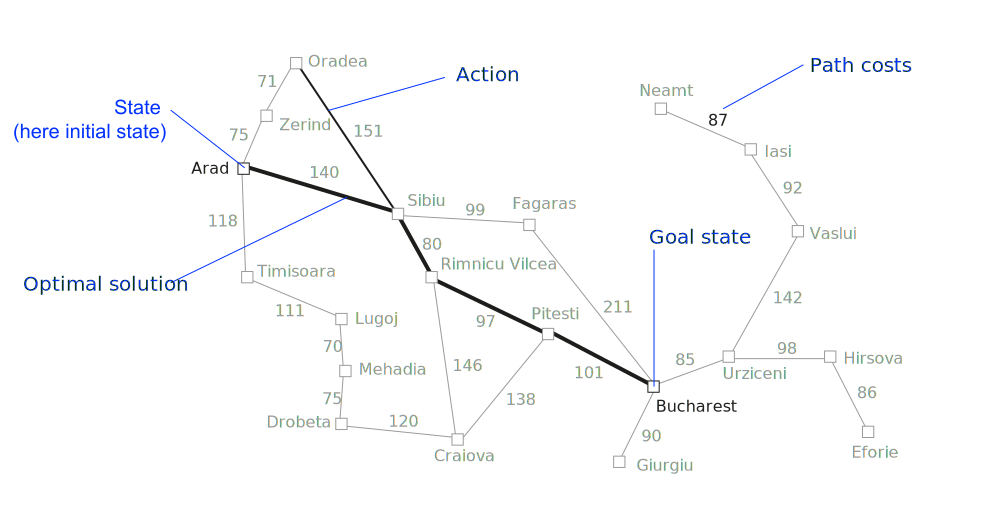
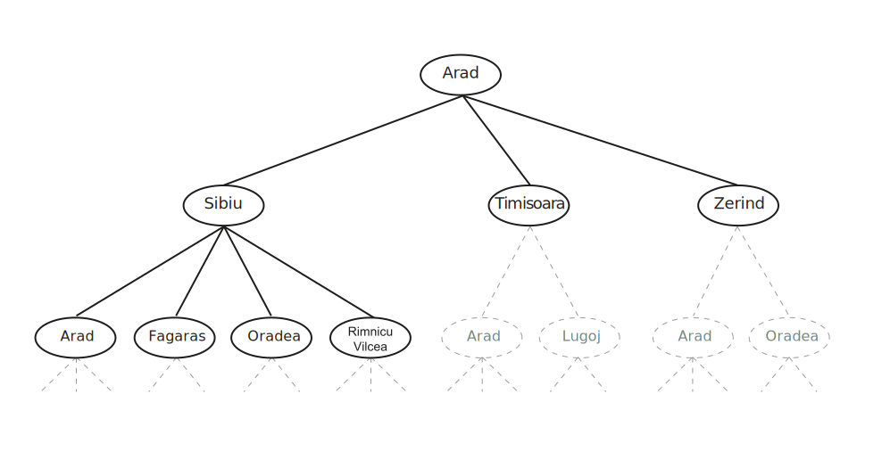
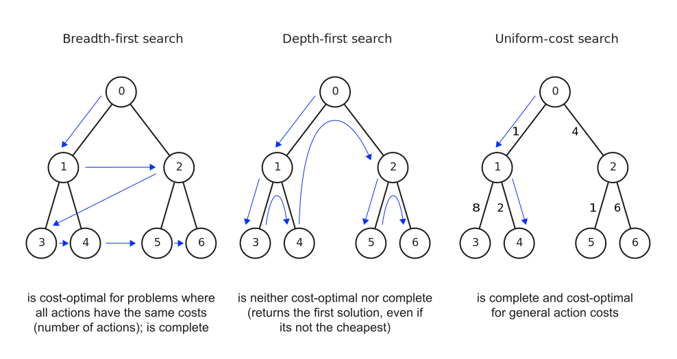

Search
🧠 Introduction to AI — I2AI_3
University of Applied Sciences Neu-Ulm
Problem-solving
Applications


Agents
Agents that plan ahead by considering a sequence of actions that form a path to a goal state are called problem-solving agents (Russel and Norvig 2022, 81)
- The computational process it undertakes is search
- The representations the agents use are atomic representations1
- There are search algorithms for several environments
Here only simple environments are considered (episodic, single agent, fully observable, deterministic, static, discrete, and known).
We assume that information about the environment are given (e.g., a map)
Process
In simple environments, agents can follow a four-phase-problem-solving process (Russel and Norvig 2022, 81–82):
- Goal formulation: goals organize behavior by limiting the objectives and hence the actions to be considered
- Problem formulation: the agents devices a description of the states and actions necessary to reach the goal—an abstract model of the relevant part of the environment
- Search: the agent simulates sequences of actions in its model, searching until it finds a sequence that reaches the goal (i.e., the solution)
- Execution: the agent executes the actions in the solution, one at a time
Search problem
Definition
A search problem can be defined formally as (Russel and Norvig 2022, 83):
- The state space: a set of possible states2 the environment can be in3
- The initial state: the state that the agent starts
- The goal state(s): a state that the agent is trying to reach4
- A transition model: \(\textrm{RESULT}(s,a)\) (returns the state \(s'\) that results from performing action \(a\) in state \(s\))
- The successor function: \(\textrm{ACTIONS}(s)\) (returns a set of (action, state) pairs for node \(s\), where the state is the state reachable by taking the action \(a\))
- An action cost function: \(\textrm{ACTION-COST}(s,a,s')\) (gives the numeric cost of performing action \(a\) in state \(s\) to reach state \(s'\))
- A path: a sequence of actions
- A solution: a path from the initial state to the goal state
Modelling

Search tree
Structure

Search
Algorithms
Search algorithms take a search problem as input and return a solution, or an indication of failure (Russel and Norvig 2022, 89).
- They superimpose a search tree over the state-space graph,
- form various paths from the initial state, and
- try to find a path that reaches a goal state
They can implement
- uninformed search methods, which only have access to the problem definition but not clue about how close a state is to the goal(s).
- informed search methods, which have access to a heuristic function that gives domain-specific hints about how close a state is to the goal(s) (e.g., using straight-line distance in route-finding problems)
Uninformed search

Unknown environments
Online search
The agents considered so far use offline search algorithm. They compute a complete solution before taking their first action.
Online search agents interleaves computation and action:
- Takes action,
- observes the environment, and
- computes the next action
These agents can discover successor only for a state that is occupied or that is learned (i.e., contained in a map created online)
Online search is a good idea in dynamic or semi-dynamic environments.
Summary
Search operates over models of the world (which might be observed online)
- Agents do not try all possible plans
- Planning is all “in simulation”
- Search is only as good as the models are
✏️ Exercises
I2AI_3 E1
Explain why problem formulation must follow goal formulation.
I2AI_3 E2
Give a complete problem formulation for each of the following problems. Choose a formulation that is precise enough to be implemented.
- There are six glass boxes in a row, each with a lock. Each of the first five boxes holds a key unlocking the next box in line; the last box holds a banana. You have the key to the first box, and you want the banana.
- There is an n x n grid of squares, each square initially being either unpainted floor or a bottomless pit. You start standing on an unpainted floor square, and can either paint the square under you or move into an adjacent unpainted floor square. You want the whole floor painted.
I2AI_3 E3
Your goal is to navigate a robot out of a maze. It starts in the center of the maze facing north. You can turn the robot to face north, east, south, or west; direct the robot to move forward a certain distance (it will stop before a wall).
- Formulate this problem. How large is the state space?
- In navigating a maze, the only place we need to turn is at the intersection of two or more corridors. Reformulate this problem using this observation. How large is the state space now?
- From each point in the maze, we can move in any of the four directions until we reach a turning point, and this is the only action we need to do. Reformulate the problem using these actions. Do we need to keep track of the robot’s orientation now?
- In our initial description of the problem we already abstracted from the real world. Name three such simplifications we made.
Literature
Footnotes
An atomic representation is one in which each state is treated as a black box with not internal structure, meaning the state either does or does not match what you’re looking for.
A state is a situation that an agent can find itself in.
Expressed by a graph whose nodes are the set of all states, and whose links are actions that transform one state into another
Can be a single goal state, a small set of alternative goal states, or a property that applies to many states (e.g, no dirt in any location)
first-in-first-out queue first pops the node that was added to the queue first
last-in-first-out queue (also known as a stack) pops first the most recently added node
first pops the node with the minimum costs according to \(f(n)\)